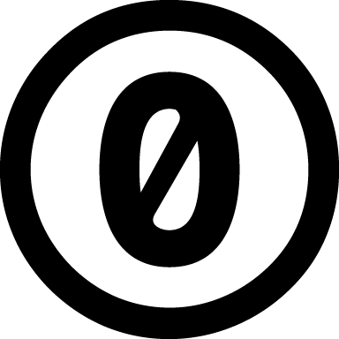

|
ENSEIGNEMENT D'EXPLORATION
|
Informatique et Création Numérique (I.C.N.)
|
ENSEIGNEMENT D'EXPLORATION
|
Informatique et Création Numérique (I.C.N.)
Creative Commons (CC) est une organisation à but non lucratif, crée en 2001, dont le but est de proposer une solution alternative légale aux personnes souhaitant libérer leurs œuvres des droits de propriété intellectuelle standard de leur pays, jugés trop restrictifs. L’organisation a créé plusieurs licences, connues sous le nom de licences Creative Commons. Ces licences, selon leur choix, donnent aucun ou seulement quelques droits aux travaux.
Inspirés par les licences de logiciels libres et le mouvement open source, ces licences facilitent l’utilisation et la réutilisation d’œuvres.
Les différents logos suivants permettent de décrire les différentes autorisations qui peuvent être données pour l'utilisation de l'œuvre :
 |
Attribution : signature de l’auteur initial (obligatoire en droit français) (sigle : BY) |
 |
Non Commercial : interdiction de tirer un profit commercial de l’œuvre sans autorisation de l'auteur (sigle : NC) |
 |
No derivative works : : impossibilité d’intégrer tout ou partie dans une œuvre composite ; l'échantillonnage (sampling), par exemple, devenant impossible (sigle : ND) |
 |
Share alike : partage de l’œuvre, avec obligation de rediffuser selon la même licence ou une licence similaire (version ultérieure ou localisée) (sigle : SA) |
La procédure qui consiste à placer une œvre sous l'une des licences Creative Commons se fait en ligne, il n'y a aucun document à signer.
Il suffit de choisir une licence parmi les 6 combinaisons possibles en repondant à certains questions à l'adresse http://creativecommons.fr/.
Un morceau de code html est alors fourni pour l'intégrer dans une page web. Ce code reproduira le logo choisi.
Ces logos pourront être par exemple sous les formes :  ,
,  ou
ou 
Creative Commons propose aussi une licence assez proche du domaine public : .
Voici quelques projets sous licence Creative Commons :